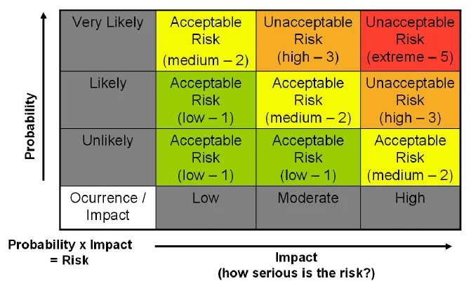
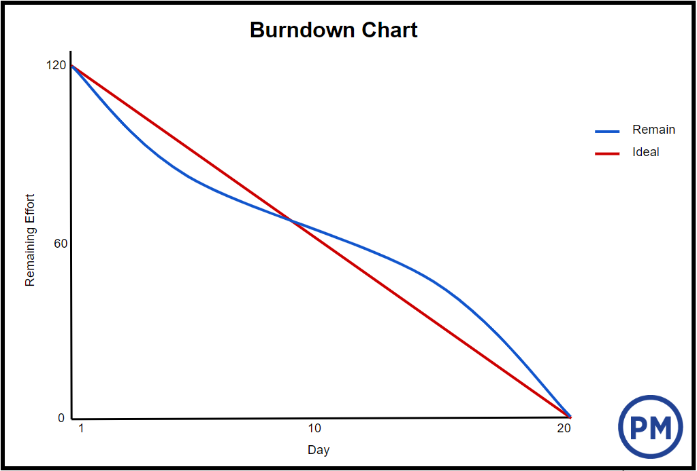

Risk is uncertainty that matters. Every project—whether predictive (Waterfall) or adaptive (Agile)—faces internal and external uncertainties that can threaten scope, schedule, budget, or quality. As a Project Manager or Scrum Master, your role is not to eliminate risk entirely (which is impossible) but to manage it systematically.
This chapter provides a repeatable, five-step risk management process that integrates seamlessly into sprint-based or phase-gate projects. You will learn how to identify risks early, analyze their potential impact, plan mitigation strategies, monitor triggers, and adapt as conditions change.
"Risk management is not about avoiding risk; it is about choosing which risks to take and which to mitigate." (Project Management Institute, 2021, p. 89)
The PMBOK® Guide and Agile practice guides converge on a five-step cycle that applies regardless of methodology. These steps are iterative—you revisit them throughout the project.
| Step | Name | Key Question | When to Perform |
|---|---|---|---|
| 1 | Identify | What could go wrong (or right)? | Project initiation, then weekly/per sprint |
| 2 | Analyze | How likely and how severe? | After identification |
| 3 | Prioritize | Which risks demand action now? | After analysis |
| 4 | Plan | What will we do for prevention or impact reduction? | After prioritization |
| 5 | Monitor & Control | Are risks changing? Are our plans working? | Continuously, during daily stand-ups or weekly reviews |
Risk identification is the most frequently skipped step, yet it is the most valuable. Teams that skip identification are surprised by problems; teams that identify risks regularly are prepared.
| Technique | How It Works | Best For |
|---|---|---|
| Brainstorming | Team lists all risks on sticky notes or a whiteboard | Early project phases |
| Risk Breakdown Structure (RBS) | Categorize risks into hierarchies (Technical, External, Organizational, Project Management) | Comprehensive coverage |
| Interviews | One-on-one sessions with stakeholders, subject matter experts | Hidden or political risks |
| Assumption analysis | List every assumption (e.g., "Vendor will deliver on time") and ask: what if false? | Uncovering blind spots |
| Historical review | Review lessons learned from past similar projects | Reducing repeated failures |
Document every identified risk in a Risk Register (simple table format shown below). For Agile teams, this can be a shared spreadsheet, a Confluence page, or a dedicated "Risk" column on your Scrum board.
| Risk ID | Date Identified | Risk Description | Category | Owner |
|---|---|---|---|---|
| R-12 | 2026-04-15 | Key API vendor may delay delivery by 2+ weeks | External | Sarah (PM) |
| R-14 | 2026-04-16 | Team lacks experience with React 19's new concurrent features | Technical | Tom (Tech Lead) |
Analysis answers two questions: How likely is this risk? and How severe would the impact be?
Assign each risk a simple rating. Use a consistent scale (e.g., 1-5 or Low/Medium/High).
| Rating | Probability | Impact on Cost/Schedule/Quality |
|---|---|---|
| Low (L) | < 20% | Minor delay (<1 day) or < 5% overage |
| Medium (M) | 20% - 60% | Noticeable delay (2-5 days) or 5-15% overage |
| High (H) | > 60% | Major delay (>1 week) or > 15% overage |
For high-stakes projects, use:
"Teams that skip qualitative risk analysis often waste time on low-impact risks while high-severity risks remain unaddressed." (McNeil et al., 2015, p. 62)

Red zone (High P + High I): Immediate response
Yellow zone: Monitor regularly
Green zone: Accept or watch
Using your Probability × Impact matrix, sort risks by risk score (e.g., H×H = 9, H×M = 6, M×H = 6, etc.). Maintain a Top 5 or Top 10 Risk List and review it at every stand-up or weekly status meeting.
| Priority | Risk ID | Risk Score | Action Status |
|---|---|---|---|
| 1 | R-04 | 9 (H×H) | Response planned |
| 2 | R-12 | 6 (H×M) | Response planned |
| 3 | R-14 | 6 (M×H) | Monitoring |
| 4 | R-08 | 4 (M×M) | Watch list |
| 5 | R-20 | 2 (L×M) | Accept |
For each prioritized risk, choose one or more response strategies. Responses can be proactive (before the risk occurs) or reactive (after).
| Strategy | Action | Example |
|---|---|---|
| Avoid | Eliminate the cause | Change vendor, remove the risky feature from scope |
| Mitigate | Reduce probability or impact | Add code reviews to reduce defect probability; build a performance buffer |
| Transfer | Shift impact to third party | Purchase insurance, fixed-price contract with penalty clauses |
| Strategy | Action | Example |
|---|---|---|
| Exploit | Make it happen | Add resources to accelerate early completion |
| Enhance | Increase probability or impact | Extend pilot testing to get more user feedback |
| Share | Partner with another team | Co-develop a feature with another department |
| Accept | Capture if occurs | Low-probability windfall (e.g., early budget approval) |
A risk plan that sits on a shelf is worthless. Monitoring ensures risks are tracked, triggers are watched, and new risks are identified.
Create a simple chart showing total risk score (sum of all HxM values) over time. A healthy project shows a declining trend.
When risk exposure increases, investigate and plan new responses immediately.

Shows total risk score (sum of H×M values) over time. A healthy project shows a declining trend.
Image placeholder: Insert Risk Burndown Chart hereTraditional risk management can feel heavy for Agile teams. Adapt these lightweight practices:
| Traditional Concept | Agile Adaptation |
|---|---|
| Risk register | Risk column on Scrum board; each risk is a card |
| Probability × Impact matrix | Dot-voting or "Risk Poker" (similar to Planning Poker) |
| Contingency reserve | Add 10–20% buffer story points per sprint for unplanned work |
| Weekly risk review | 5 minutes during Sprint Planning or Backlog Refinement |
| Risk owner | Assign a team member to "watch" each high-priority risk card |
"In Agile, risk management is not a separate ceremony; it is embedded in Backlog Refinement, Daily Stand-ups, and Retrospectives." (Mountain Goat Software, 2022)
| Mistake | Consequence | Fix |
|---|---|---|
| Identifying risks once at project start | Mid-project surprises, firefighting | Revisit risk ID at every sprint planning |
| No assigned risk owners | Nobody watches for triggers | Every risk has a named owner |
| Mitigation plans that are vague ("We'll try harder") | No real reduction in risk | Mitigation must be specific, measurable |
| Ignoring positive risks (opportunities) | Missed chances for early value | Include an "Opportunities" section in risk register |
| Risk register as a private document | Team unaware, blind spots | Make risk register visible (shared drive, wiki, board) |
Use this checklist each sprint (or each week in Waterfall):
"The greatest risk in any project is the illusion of certainty. Systematic risk management replaces hope with awareness." (Pritchard, 2015, p. 17)
1. Risk Management (Association for Project Management, n.d.) - Guide to enterprise and project risk management practices
https://www.apm.org.uk/resources/find-a-resource/risk-management/
2. What is a Risk Register? (Atlassian, n.d.) - Documentation and best practices for creating and maintaining risk registers
https://www.atlassian.com/work-management/project-management/risk-register
3. Managing Risk in Projects (Hillson, D., 2009) - Comprehensive framework for project risk management processes
Covers identification, analysis, and response planning techniques applicable to both traditional and agile projects
4. Risk Management: Concepts and Guidance (Pritchard, C. L., 2015) - Fifth edition guide to systematic risk management
Emphasizes the importance of continuous risk monitoring and adaptation throughout project lifecycle
5. A Guide to the Project Management Body of Knowledge (Project Management Institute, 2021) - PMBOK® Guide (7th ed.) risk management processes
Includes the five-step risk management process: identify, analyze, prioritize, plan responses, and monitor & control